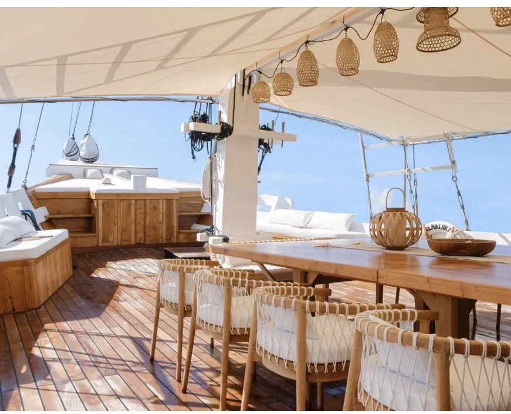
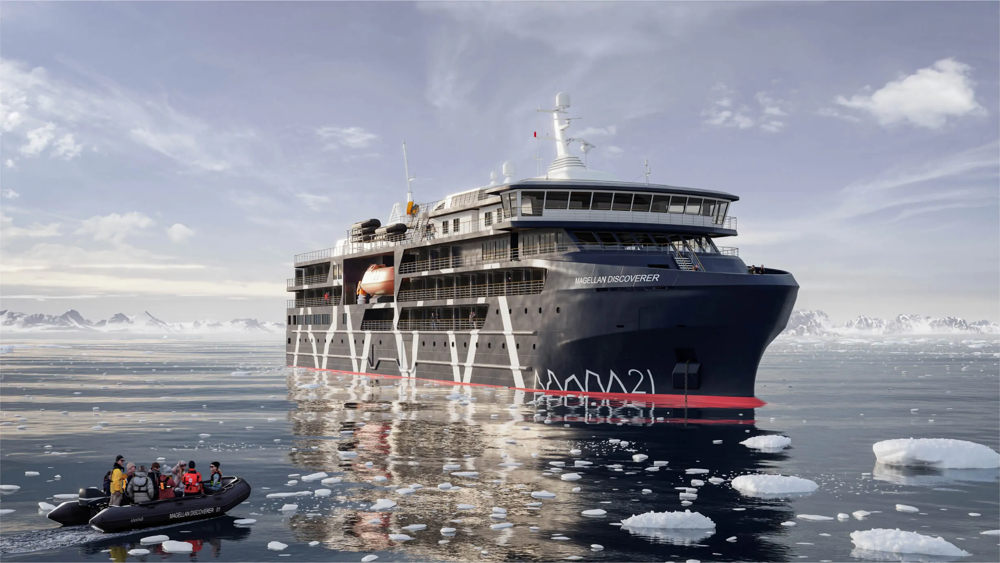

Stillness, by small ship
Wild & Co Voyages
Some places are best approached slowly — by a small ship, with people who know when to put the engine into neutral and let the shore speak for itself. The vessel matters. So does the route, the landing party, and the time you actually have ashore.
Why this exists
The voyage is part of the placeA ship’s brochure sells the suite. The voyage is decided by the vessel’s size, its ice class, its landing craft and how many people go ashore at once. Wild & Co Voyages records those first.
Choosing a voyage is choosing who you will share a horizon with for ten days. We would rather you knew that before you boarded.
Every vessel in the ledger is held with what decides the experience: guest numbers, cabin categories, propulsion, ice class and the route as the operator publishes it. Where a sample is drawn from an operator’s own information rather than our time aboard, it says so.
James has been sailing since 1989 — surfing breaks, diving reefs and exploring every cove a boat could reach. The love of waking up at sea is why this direction exists, and why it keeps growing.
The polar collection sits here too — Antarctica and the Arctic, with the operators James sails and recommends.
“I’ve been at sea since 1989 — surfing, diving, and poking my nose into every reef that would have me. The ocean still hasn’t told me everything. Waking up in a new cove is the same feeling as a safari truck coming round the bend: what’s next? Still going. Still finding out.”
What sits behind the voyages
The working libraryThe front is a collection of voyages. The back is the same Intelligence Library that holds every stay in the house.
A voyage is a stay that moves. We record it the same way.
- Vessels
- 28 expedition ships, yachts and river vessels recorded in the ledger.
- Voyages
- 5 vessel voyages held day by day, from the Komodo and Raja Ampat routes to the Cyclades.
- Polar
- Antarctica and the Arctic, with Antarctica21, HX, Polar Wonder and Quark.
- Captain’s Log
- James’s own voyages, written up as he sailed them — beginning with Antarctica, 2020.
- Voyage Crux
- A proposed voyage guide for ship, season and route comparisons. Not yet live; enquiries go to James.
Where the voyages go
By waterThe polar regions
Antarctica · Arctic
The Antarctic Peninsula, the South Shetlands, Svalbard and the high Arctic.
Galápagos
Islands by yacht
Small yachts and catamarans through the archipelago.
Indonesia
Phinisi & sailing
Komodo, Raja Ampat and Misool aboard traditional sailing vessels.
Great rivers
Amazon · Nile
Slow water, close banks and a different kind of expedition.
The Mediterranean
Sail · Cyclades
Island to island, by sail, at the pace the islands set.
The voyage record
Antarctica · Sample entryHow voyages are classified
Four marks- Sailed by James
- At sea since 1989. Voyages and vessels James has sailed himself — Antarctica aboard HX’s MS Roald Amundsen, Raja Ampat aboard Aliikai, French Polynesia with Windstar.
- Operator-sourced sample
- Drawn from the operator’s published itinerary and labelled as such. No inspection claimed.
- Polar collection
- Antarctica and the Arctic, where the vessel’s ice class and landing plan matter most.
- Weather-led
- Routes and landings are decided by the captain and expedition team on the day. We never promise a landing.
From the archive
On the water

The Captain’s Log · Antarctica, 2020 · to be published
Every voyage ends at a table. Gatherings is about who is sitting at it.